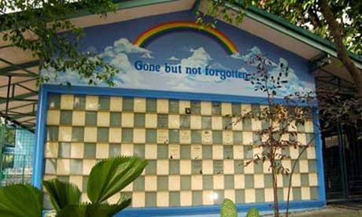
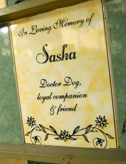

By Sherwin Castillo
Reposted from www.mefindhome.org
Have you ever wondered if there's a place here in the Philippines where people can go to commemorate their pets who have passed away? Humans do it all the time in memorial parks and cemeteries where they occasionally visit the resting places of their relatives who have passed on. They light candles and offer flowers in honor and loving memory of their dead.
PAWS, in a project called the PAWS Pet Memorial Wall, has made such a thing possible by allocating a portion of its animal shelter, a.k.a. PAWS Animal Rehabilitation Center (PARC), for its Pet Memorial Wall where humans/pet guardians/owners can dedicate memorial wall tiles for their pets who have moved on to the rainbow bridge.
While it is built for the memory of a departed pet, is not a columbarium to keep the cremated remains nor a place to bury the deceased animals.
This project is also meant to raise funds for the shelter as each tile (dimensions: 20x30 cm) costs Php 2,500 (approx. $58) inclusive of a four-line dedication with layout provided by PAWS (for approval by tile owner).
This is a pretty good way to create a lasting memorial to the pets that have been a significant part of our lives while at the same time reaching out a helping hand to the animals who are in dire need of our help at the shelter.
The shelter currently houses more than 250 cats and 55 dogs, most of whom are looking for adoptive homes.
The Memorial Wall will be maintained for as long as the shelter stands. A memorial tile dedication is good for 5 years with renewable agreement.
For more information, please contact 475-1688 or philpaws@paws.org.ph